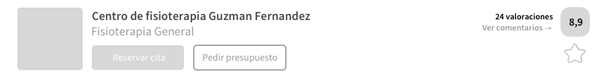

Convertir la imagen anterior a código usando HTML y CSS y lo que habéis aprendido hoy de Flexbox. Los requisitos son los siguientes:
En este caso si el tamaño de la ventana aumenta solo aumentará el tamaño del bloque central, el bloque gris de la izquierda y el grupo que compone la puntuación, texto y estrella de la derecha siempre tendrán el mismo tamaño (ejemplo abajo)
El ancho del conjunto entero debe ser del 100% con un ancho máximo de 840px. Para el bloque gris de la izquierda debéis buscar una imagen cuadrada y colocarla ahí
No os preocupeis por el tamaño de cada elemento, lo importante es que el resultado tenga una composición similar
Para redondear los bordes debéis usar border-radius con unidades en píxel (por ejemplo, border-radius: 5px)
Si tenéis cualquier duda, preguntad.